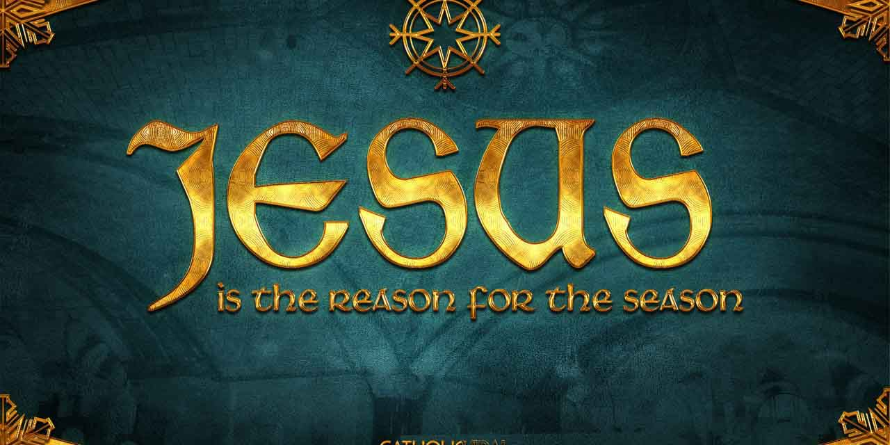
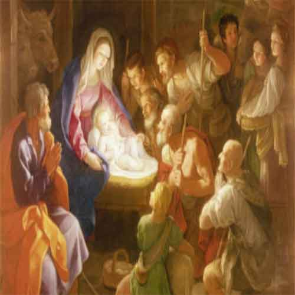
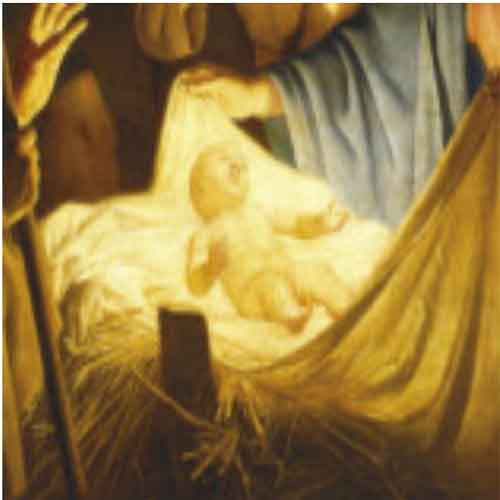
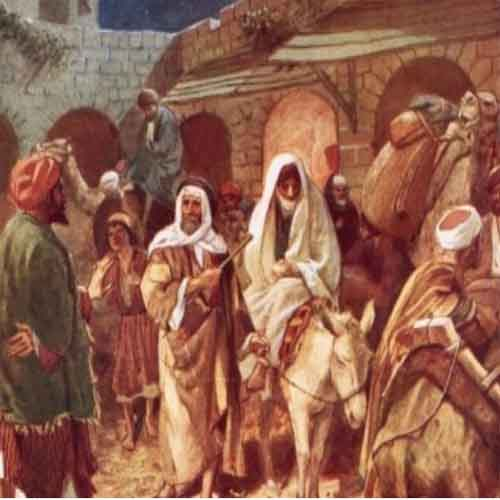

So, when was Jesus Born?There's a strong and practical reason why Jesus might not have been born in the winter, but in the spring or the autumn! It can get very cold in the winter and it's unlikely that the shepherds would have been keeping sheep out on the hills (as those hills can get quite a lot of snow sometimes!).


In the autumn (in September or October) there's the Jewish festival of Sukkot or The Feast of Tabernacles. It's the festival that's mentioned the most times in the Bible! It is when Jewish people remember that they depended on God for all they had after they had escaped from Egypt and spent 40 years in the desert. It also celebrates the end of the harest.During the festival, Jews live outside in temporary shelters (the word tabernacle come from a latin word meaning or hut).

Many people who have studied the Bible, think that Sukkot would be a likely time for the birth of Jesus as it might fit with the description of there being 'no room in the inn'.It also would have been a good time to take the Roman Cenensus as many Jews went to Jerusalem for the festival and they would have brought their own tents/shelters with them! (It wouldn't have been practical for Joseph and Mary to carry their own shelter as Mary was pregnant.) The possibilities for the Star of Bethlehem seems to point either spring or autumn.

The possible dating of Jesus birth can also be taken from when Zechariah (who was married to Mary's cousin Elizabeth) was on duty in the Jewish Temple as a Priest and had an amazing experience. There is an excellent article on the dating of Christmas based in the dates of Zechariah's experience, on the blog of theologian, lan Paul.With those dates, you get Jesus being born in September - which also fits with Sukkot! The year that Jesus was born isn't known. The cleander system we have now was crested in the 6th Century by a monk called Dionysius Exiguus. He was actually trying to create a better system for working out when Easter should be celebrated, based on a new calendar with the birth of Jesus being in the year 1. However, he made a mistake in his maths and so got the possible year of Jesus's birth wrong!